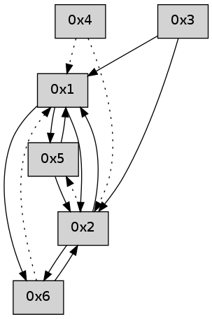

>> << IDX [start] -100 -25 -5 +0 +5 +25 +100 [450.428606987]
 Previous packets
----------------------------------------------------------------------
445.015418 beacon01(adaf) #0 coord=01,02,05,03,04,06 cycle=432.0ms assoc
-- color-indic=0 64 3f 1f
445.025379 beacon02(adaf) #0 coord=01,02,05,03,04,06 cycle=432.0ms assoc 64 6e e0
445.035379 beacon05(adaf) #0 coord=01,02,05,03,04,06 cycle=432.0ms assoc 64 c8 ca
445.045380 beacon03(adaf) #0 coord=01,02,05,03,04,06 cycle=432.0ms assoc 64 54 ee
445.055379 beacon04(adaf) #0 coord=01,02,05,03,04,06 cycle=432.0ms assoc 64 f2 c4
445.065379 beacon06(adaf) #0 coord=01,02,05,03,04,06 cycle=432.0ms assoc 64 86 d8
445.077054 [Hello(4): seq=243 asym=2,1 sysInfo= stat=2:2,0,0,0/1:7,0,0,0]
445.080463 [Hello(1): seq=142 sym=2,6 sysInfo= stat=2:5,0,0,0/6:4,0,0,0]
----------------------------------------------------------------------
445.507526 beacon01(adaf) #0 coord=01,02,05,03,04,06 cycle=432.0ms assoc
-- color-indic=0 64 fb 70
445.517487 beacon02(adaf) #0 coord=01,02,05,03,04,06 cycle=432.0ms assoc 64 aa 8f
445.527486 beacon05(adaf) #0 coord=01,02,05,03,04,06 cycle=432.0ms assoc 64 0c a5
445.537487 beacon03(adaf) #0 coord=01,02,05,03,04,06 cycle=432.0ms assoc 64 90 81
445.547487 beacon04(adaf) #0 coord=01,02,05,03,04,06 cycle=432.0ms assoc 64 36 ab
445.557490 beacon06(adaf) #0 coord=01,02,05,03,04,06 cycle=432.0ms assoc 64 42 b7
445.569151 [Hello(2): seq=740 sym=6,1,3 sysInfo= stat=6:12,0,0,0/1:0,0,0,0/3:4,0,0,0]
----------------------------------------------------------------------
445.999633 beacon01(adaf) #0 coord=01,02,05,03,04,06 cycle=432.0ms assoc
-- color-indic=0 64 b7 c0
446.009593 beacon02(adaf) #0 coord=01,02,05,03,04,06 cycle=432.0ms assoc 64 e6 3f
446.019595 beacon05(adaf) #0 coord=01,02,05,03,04,06 cycle=432.0ms assoc 64 40 15
446.029595 beacon03(adaf) #0 coord=01,02,05,03,04,06 cycle=432.0ms assoc 64 dc 31
446.039594 beacon04(adaf) #0 coord=01,02,05,03,04,06 cycle=432.0ms assoc 64 7a 1b
446.049597 beacon06(adaf) #0 coord=01,02,05,03,04,06 cycle=432.0ms assoc 64 0e 07
446.061265 [Hello(4): seq=244 asym=2,1 sysInfo= stat=2:3,0,0,0/1:8,0,0,0]
446.066887 [Hello(1): seq=143 sym=2,6 sysInfo= stat=2:6,0,0,0/6:4,0,0,0]
----------------------------------------------------------------------
446.491742 beacon01(adaf) #0 coord=01,02,05,03,04,06 cycle=432.0ms assoc
-- color-indic=0 64 73 af
446.501703 beacon02(adaf) #0 coord=01,02,05,03,04,06 cycle=432.0ms assoc 64 22 50
446.511703 beacon05(adaf) #0 coord=01,02,05,03,04,06 cycle=432.0ms assoc 64 84 7a
446.521703 beacon03(adaf) #0 coord=01,02,05,03,04,06 cycle=432.0ms assoc 64 18 5e
446.531703 beacon04(adaf) #0 coord=01,02,05,03,04,06 cycle=432.0ms assoc 64 be 74
446.541704 beacon06(adaf) #0 coord=01,02,05,03,04,06 cycle=432.0ms assoc 64 ca 68
446.553387 [Hello(2): seq=741 sym=6,1,3 sysInfo= stat=6:13,0,0,0/1:1,0,0,0/3:4,0,0,0]
----------------------------------------------------------------------
446.983849 beacon01(adaf) #0 coord=01,02,05,03,04,06 cycle=432.0ms assoc
-- color-indic=0 64 2d ce
446.993812 beacon02(adaf) #0 coord=01,02,05,03,04,06 cycle=432.0ms assoc 64 7c 31
447.003810 beacon05(adaf) #0 coord=01,02,05,03,04,06 cycle=432.0ms assoc 64 da 1b
447.013811 beacon03(adaf) #0 coord=01,02,05,03,04,06 cycle=432.0ms assoc 64 46 3f
447.023810 beacon04(adaf) #0 coord=01,02,05,03,04,06 cycle=432.0ms assoc 64 e0 15
447.033810 beacon06(adaf) #0 coord=01,02,05,03,04,06 cycle=432.0ms assoc 64 94 09
447.045465 [Hello(4): seq=245 asym=2,1 sysInfo= stat=2:4,0,0,0/1:9,0,0,0]
447.047269 [Hello(1): seq=144 sym=2,6 sysInfo= stat=2:7,0,0,0/6:4,0,0,0]
----------------------------------------------------------------------
447.475958 beacon01(adaf) #0 coord=01,02,05,03,04,06 cycle=432.0ms assoc
-- color-indic=0 64 e9 a1
447.485918 beacon02(adaf) #0 coord=01,02,05,03,04,06 cycle=432.0ms assoc 64 b8 5e
447.495918 beacon05(adaf) #0 coord=01,02,05,03,04,06 cycle=432.0ms assoc 64 1e 74
447.505918 beacon03(adaf) #0 coord=01,02,05,03,04,06 cycle=432.0ms assoc 64 82 50
447.515920 beacon04(adaf) #0 coord=01,02,05,03,04,06 cycle=432.0ms assoc 64 24 7a
447.525920 beacon06(adaf) #0 coord=01,02,05,03,04,06 cycle=432.0ms assoc 64 50 66
447.537584 [Hello(2): seq=742 sym=6,1,3 sysInfo= stat=6:14,0,0,0/1:2,0,0,0/3:4,0,0,0]
----------------------------------------------------------------------
447.968065 beacon01(adaf) #0 coord=01,02,05,03,04,06 cycle=432.0ms assoc
-- color-indic=0 64 a5 11
447.978027 beacon02(adaf) #0 coord=01,02,05,03,04,06 cycle=432.0ms assoc 64 f4 ee
447.988026 beacon05(adaf) #0 coord=01,02,05,03,04,06 cycle=432.0ms assoc 64 52 c4
447.998026 beacon03(adaf) #0 coord=01,02,05,03,04,06 cycle=432.0ms assoc 64 ce e0
448.008026 beacon04(adaf) #0 coord=01,02,05,03,04,06 cycle=432.0ms assoc 64 68 ca
448.018027 beacon06(adaf) #0 coord=01,02,05,03,04,06 cycle=432.0ms assoc 64 1c d6
448.029113 [Hello(1): seq=145 sym=2,6 sysInfo= stat=2:8,0,0,0/6:4,0,0,0]
448.033334 [Hello(4): seq=246 asym=2,1 sysInfo= stat=2:5,0,0,0/1:10,0,0,0]
----------------------------------------------------------------------
448.460174 beacon01(adaf) #0 coord=01,02,05,03,04,06 cycle=432.0ms assoc
-- color-indic=0 64 61 7e
448.480135 beacon05(adaf) #0 coord=01,02,05,03,04,06 cycle=432.0ms assoc 64 96 ab
448.510136 beacon06(adaf) #0 coord=01,02,05,03,04,06 cycle=432.0ms assoc 64 d8 b9
448.521801 [Hello(5): seq=208 asym=1 sysInfo= stat=1:7,0,0,0]
----------------------------------------------------------------------
448.952282 beacon01(adaf) #0 coord=01,02,05,03,04,06 cycle=432.0ms assoc
-- color-indic=0 64 2c 79
448.962243 beacon02(adaf) #0 coord=01,02,05,03,04,06 cycle=432.0ms assoc 64 7d 86
448.972243 beacon05(adaf) #0 coord=01,02,05,03,04,06 cycle=432.0ms assoc 64 db ac
448.982243 beacon03(adaf) #0 coord=01,02,05,03,04,06 cycle=432.0ms assoc 64 47 88
448.992244 beacon04(adaf) #0 coord=01,02,05,03,04,06 cycle=432.0ms assoc 64 e1 a2
449.002246 beacon06(adaf) #0 coord=01,02,05,03,04,06 cycle=432.0ms assoc 64 95 be
449.013893 [Hello(4): seq=247 asym=2,1 sysInfo= stat=2:5,0,0,0/1:10,0,0,0]
449.016696 [Hello(1): seq=146 sym=5,2,6 sysInfo= stat=5:0,0,0,0/2:8,0,0,0/6:5,0,0,0]
449.019339 [Hello(2): seq=743 sym=6,1 asym=5 sysInfo= stat=6:15,0,0,0/1:3,0,0,0/5:0,0,0,0]
----------------------------------------------------------------------
449.444391 beacon01(adaf) #0 coord=01,02,05,03,04,06 cycle=432.0ms assoc
-- color-indic=0 64 e8 16
449.454353 beacon02(adaf) #0 coord=01,02,05,03,04,06 cycle=432.0ms assoc 64 b9 e9
449.464351 beacon05(adaf) #0 coord=01,02,05,03,04,06 cycle=432.0ms assoc 64 1f c3
449.474352 beacon03(adaf) #0 coord=01,02,05,03,04,06 cycle=432.0ms assoc 64 83 e7
449.484353 beacon04(adaf) #0 coord=01,02,05,03,04,06 cycle=432.0ms assoc 64 25 cd
449.494352 beacon06(adaf) #0 coord=01,02,05,03,04,06 cycle=432.0ms assoc 64 51 d1
449.505991 [Hello(5): seq=209 sym=2,1 sysInfo= stat=2:0,0,0,0/1:8,0,0,0]
----------------------------------------------------------------------
449.936499 beacon01(adaf) #0 coord=01,02,05,03,04,06 cycle=432.0ms assoc
-- color-indic=0 64 a4 a6
449.946461 beacon02(adaf) #0 coord=01,02,05,03,04,06 cycle=432.0ms assoc 64 f5 59
449.956461 beacon05(adaf) #0 coord=01,02,05,03,04,06 cycle=432.0ms assoc 64 53 73
449.966461 beacon03(adaf) #0 coord=01,02,05,03,04,06 cycle=432.0ms assoc 64 cf 57
449.976460 beacon04(adaf) #0 coord=01,02,05,03,04,06 cycle=432.0ms assoc 64 69 7d
449.986462 beacon06(adaf) #0 coord=01,02,05,03,04,06 cycle=432.0ms assoc 64 1d 61
449.997581 [Hello(1): seq=147 sym=5,2,6 sysInfo= stat=5:1,0,0,0/2:9,0,0,0/6:5,0,0,0]